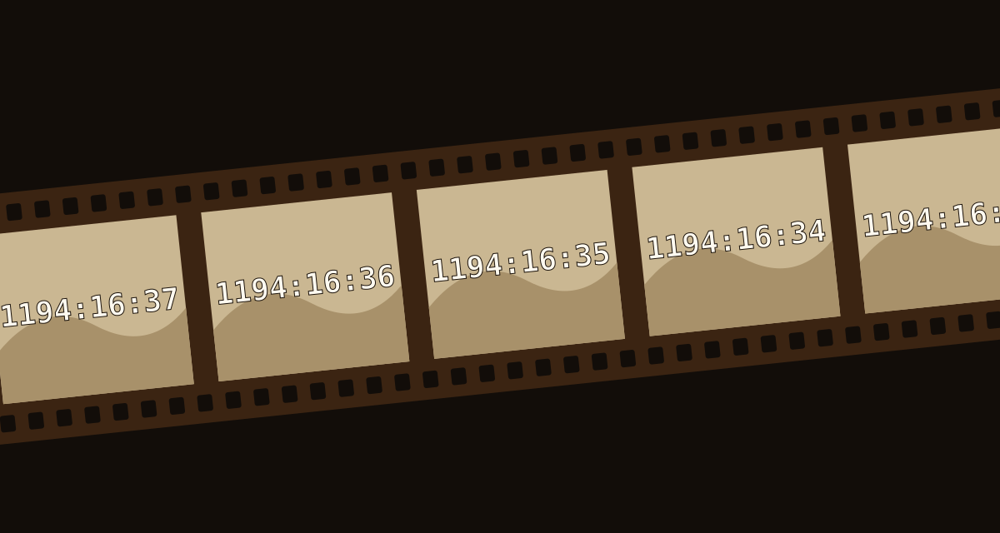

Задача трёх тел · глава 6 из 35
Стрелок и фермер

Кратко
Ван Мяо, фотограф-любитель, находит на своих снимках цифры — обратный отсчёт, который появляется только на его плёнке и камерах. Он идёт к Шэнь Юйфэй, физику из «Границ науки», и та советует ему остановить исследования наноматериала. У неё он видит Пань Ханя, который предостерегает её: не стоит торопить события. Здесь же Ван слышит две гипотезы о том, как могут видеть мир разумные существа внутри чужого замысла: «стрелок» пробивает мишень каждые десять сантиметров, и двумерные жители мишени принимают это за закон природы; «фермер» кормит индеек каждое утро, и учёная индейка выводит закон — до утра Дня благодарения. Вскоре отсчёт переходит прямо в глаза Ван Мяо. Он останавливает эксперимент «Летающее лезвие», и цифры замирают; Шэнь Юйфэй обещает, что вскоре для него «замигает Вселенная».
Главные моменты
- Обратный отсчёт на фотоплёнке — сначала кажется браком, потом пугает.
- Цифры в собственных глазах: противник может достать его где угодно.
- Гипотезы стрелка и фермера: «законы природы» могут оказаться чужой волей.
- Ван останавливает свой проект — и отсчёт тут же замирает.
Значение
Глава задаёт главный философский вопрос романа: что, если «законы» нашего мира — лишь воля кого-то более могущественного? Отсчёт превращает абстрактную угрозу в личную.